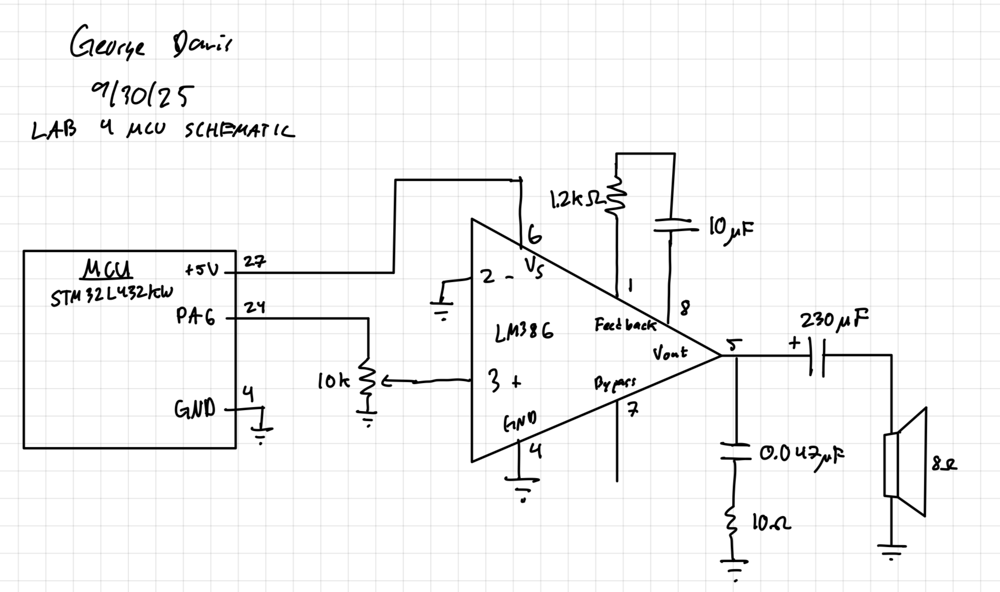
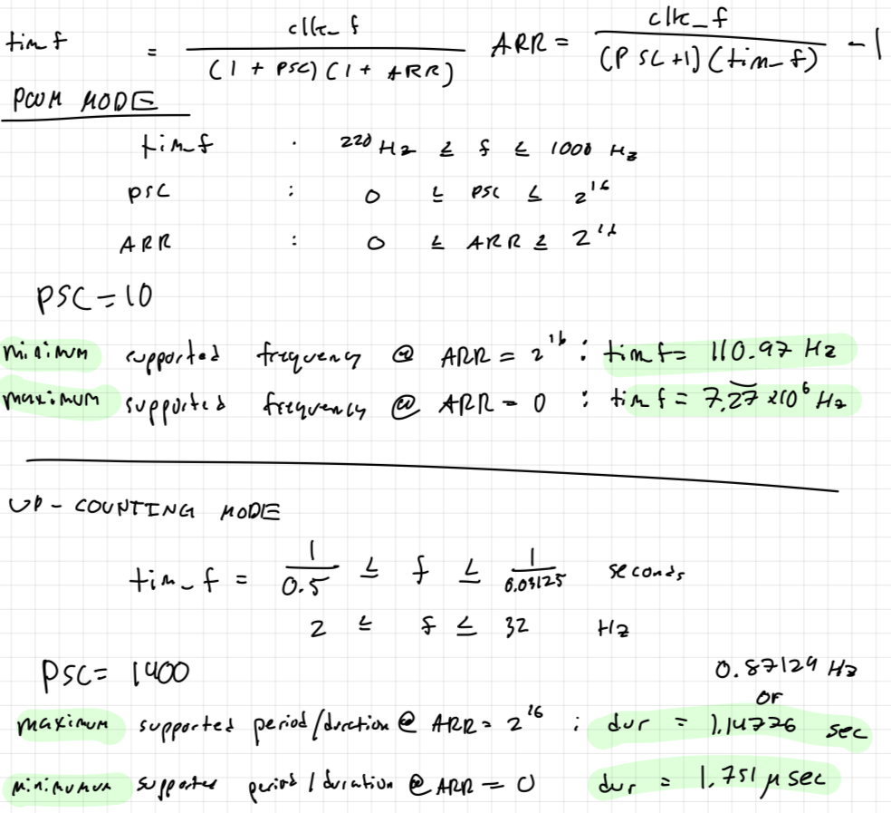

Lab 4 Report
Summary
Lab 4 focused on setting up drivers for the STM32L432KB to configure two timers to execute a simple song on an 8-ohm speaker. To do this, I created a simple audio amplifying circuit with an LM386 with a gain of 50, along with a series of custom and provided drivers and C functions. The code converted an array of pitches and durations to timer frequencies that divided down the configured system clock to toggle a GPIO pin. This lab was difficult because I had to make my own timer divers and initialize them to the correct modes. To do this, I had to decipher the hard-to-read data sheet and cross-reference multiple sections to enable the proper bits. This had an extremely steep learning curve, but I feel very confident with it now. My design meets the excellent requirements of the class.
I spent 22 hours on this lab. Most of my time was spent on debugging my code while overlooking that I was reading out of the wrong pin on the oscilloscope and on my timer. This is because the pin names on the STM dev board do not match the pin names in software (i.e., A6 != PA6)
Functional Demonstation: Superstition, Stevie Wonder!
Technical Documentation
The source code for this lab can be found in the associated Github repository found by following the link on the righthand side of the page.
Schematic

Figure 1 shows the physical layout of the circuit along with the pin names, numbers, and the component values.
Calculations to show Induvidual Pitches Match 1% Error
| Note | Frequency (Hz) | ARR | FREQ (ACTUAL) | % ERROR |
|---|---|---|---|---|
| A3 | 220 | 33056 | 220.0056651 | 0.002575066308 |
| A3 sharp / B3 flat | 233.1 | 31199 | 233.1002331 | 0.0001000001 |
| B3 | 246.9 | 29455 | 246.9013876 | 0.0005620031585 |
| C4 (middle C) | 261.6 | 27799 | 261.6088947 | 0.003400115604 |
| C4 sharp / D4 flat | 277.2 | 26235 | 277.2041193 | 0.001486022082 |
| D4 | 293.7 | 24761 | 293.7051641 | 0.001758280915 |
| D4 sharp / E4 flat | 311.1 | 23376 | 311.1060988 | 0.001960413431 |
| E4 | 329.6 | 22064 | 329.6046804 | 0.001420020164 |
| F4 | 349.2 | 20825 | 349.2138324 | 0.003961156901 |
| F4 sharp / G4 flat | 370 | 19655 | 370.00037 | 0.0001000001 |
| G4 | 392 | 18551 | 392.0185033 | 0.004720222795 |
| G4 sharp / A4 flat | 415.3 | 17510 | 415.3233552 | 0.005623691241 |
| A4 | 440 | 16527 | 440.0246414 | 0.005600313618 |
| A4 sharp / B4 flat | 466.2 | 15599 | 466.2004662 | 0.0001000001 |
| B4 | 493.9 | 14724 | 493.9033802 | 0.0006843796837 |
| C5 | 523.3 | 13896 | 523.3307385 | 0.005873970015 |
| C5 sharp / D5 flat | 554.4 | 13117 | 554.4082385 | 0.001486022082 |
| D5 | 587.3 | 12382 | 587.3154545 | 0.002631444243 |
| D5 sharp / E5 flat | 622.2 | 11687 | 622.2388153 | 0.006238389151 |
| E5 | 659.2 | 11031 | 659.2392379 | 0.005952354284 |
| F5 | 698.4 | 10412 | 698.4276647 | 0.003961156901 |
| F5 sharp / G5 flat | 740.9 | 9815 | 740.9053864 | 0.0007270052853 |
| G5 | 784 | 9275 | 784.0370065 | 0.004720222795 |
| G5 sharp / A5 flat | 830.6 | 8754 | 830.6941488 | 0.01133503468 |
| A5 | 880 | 8263 | 880.0492828 | 0.005600313618 |
Calculations to show Induvidual Tone Lengths Match 1% Error
| Note Type | Duration [s] | Frequency | ARR | FREQ (ACTUAL) | DUR (ACTUAL) | % ERROR |
|---|---|---|---|---|---|---|
| Whole | 0.5 | 2 | 28550 | 2.00000245 | 0.4999993875 | 0.0001225001501 |
| Half | 0.25 | 4 | 14274 | 4.000145005 | 0.2499909375 | 0.003625131411 |
| Quarter | 0.125 | 8 | 7136 | 8.00085049 | 0.1249867125 | 0.01063113009 |
| Eighth | 0.0625 | 16 | 3567 | 16.00394337 | 0.0624846 | 0.02464607279 |
| Sixteenth | 0.03125 | 32 | 1783 | 32.00788674 | 0.0312423 | 0.02464607279 |
Calculations to show Min and Max Tone Lengths and Frequency for PSC Selected

Figure 2 shows the maximum and minimum values for the duration of a note and frequency of the tone. This is limited by the 16 bit auto reload register and the prescaler which is set for either application.
AI Prototype
I gave ChatGPT the following prompt:
What timers should I use on the STM32L432KC to generate frequencies ranging from 220Hz to 1kHz? What’s the best choice of timer if I want to easily connect it to a GPIO pin? What formulae are relevant, and what registers need to be set to configure them properly?
It broke its response down into 5 parts that outlined the process of choosing and then configuring the timers to complete the function described. It started by outlining all of the available timers and their basic differences/ functions and then its recommendations. It recommended I use TIM 1, 2, 3, or 5. This is WRONG! Upon my own inspection of the reference manual, our STM does not support a TIM 4 or 5. There is still value in its opinion, but this hallucination is damning. The next two sections outline the calculations that need to be performed in order to properly set the prescaler (PSC), pulse width (RCC), and automatic reload (ARR) in order to get the desired counter frequency. I struggled with this part of the lab, and Chat’s explanation made sense and could potentially provide itself as a good resource for future, similar calculations and conceptual hurdles. The fourth section is the most helpful in my opinion, as it clears up the most difficult aspect of the lab, discerning what the reference manual wants from you when you are trying to configure a peripheral to a mode. Chat gave me lines of code that would show me how to set the right bits in each TIM register. However, Chat used masks without defining their bit shift value, so without drivers or header files, this code is useless! The final section was a short summary and a prompt to me to ask it for clarification.
I would give this response an F grade due to its content being either incorrect or correct, but unusable for this purpose. First, recommending timers that don’t exist would lead any unsuspecting user down a trail of confusion. These processors are complex, and taking shortcuts with an LLM that is also fallible is not a great idea. Additionally, because the code it provided used undefined masks I would be unable to really use or learn from it without the reference manual. I think if my prompt were targeted, as opposed to asking it to solve multiple problems, I would get clearer information. For example, “what bits do I need to set in order to configure TIMx” could reduce the amount the LLM has to process and increase the detail of the response.